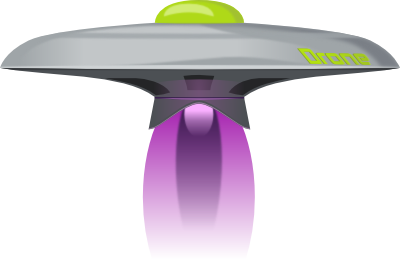

Greeting, Earthlings!
Requirements
- JDK
- Maven
- Git
Nice to have
- IDE
If YES
Copy and extract:
arquillian-test-crunch-workshop.zip
Extract:
arquillian-test-crunch-workshop/resources/
maven-repository.zip
Extract:
arquillian-test-crunch-workshop/resources/
wildfly-9.0.2.Final.zip
Import arquillian-test-crunch-workshop into your IDE
If NOT
Install them
Copy and extract the same files as mentioned
or
Just watch
Matous Jobanek
- Quality Engineer at Red Hat
- Arquillian cotribution:
- Drone
- ShrinkWrap Resolver
- Graphene (Screenshooter)
- Recorder
- ...
- Previously: QE for Weld, DeltaSpike, GWT, Errai
- Mountains, nature, beer, ...
Agenda
- Introduction
- Arquillian core
- Client x In-container tests
- Container adapters
- ShrinkWrap - basics
- Arquillian UI tests
- Drone
- Graphene
- Arquillian in-container integration tests
- ShrinkWrap
- ShrinkWrap Resolver
- Write you own extension (Volkswagen)
Basics
What types of test?
- Unit
- Integration
- Functional
Tests should be
Portable to any supported container
Executable from both IDE and build tool
Arquillian Core
so you can rule the code, not the bugs!
Arquillian Core
is
Testing platform
Middleware for your tests
Arquillian Core
is
Modular, Extensible, Flexible
Test Extensions
SPI for test runners
Test Runners
JUnit · TestNG · Spock · JBehave · Cucumber · Thucydides
Pray to the demo gods

Demo 1
git tag: rev_01- Get familiar with the project
-
Maven dependency
org.jboss.arquillian.junit
arquillian-junit-container
1.1.10.Final
-
Annotation @RunWith(Arquillian.class)
Container Extensions
SPI for runtime providers
Container Adapters
WildFly · JBoss EAP · GlassFish · TomEE · Jetty · Tomcat · WebSphere · WebLogic · Spring · Weld · OSGi · Android · iOS
Demo 2
git tag: rev_02-
Add container adapter dependency
org.wildfly.arquillian
wildfly-arquillian-container-remote
1.1.0.Alpha1
-
Create @Deploymentwith ShrinkWrap
Run modes
In-container mode
@Deployment(testable = true)
Client mode
@Deployment(testable = false)
or
@RunAsClient
Container Types
Remote
Separate JVM
Lifecycle is NOT managed by Arquillian
Managed
Separate JVM
Lifecycle IS managed by Arquillian
Embeded
Same JVM
Lifecycle is mostly likely managed by Arquillian
How does this all work?


Arquillian Drone
Arquillian Drone
Brings the power of Selenium WebDriver into the Arquillian universe
Selenium WebDriver provides a language how to communicate with a browser
Why not plain WebDriver?
Drone provides:
- Life cycle management of the browser
- Interaction with deployments
- Simple usage of multiple browsers in a single test
- Configuration kept on a single place - Arquillian.xml
- Integration with mobile based browsers
- and more...
Supported browsers
Firefox · Opera · Chrome · IE · Safari · HtmlUnit · PhantomJS
Demo 3
git tag: rev_03-
Maven dependency
org.jboss.arquillian.extension
arquillian-drone-webdriver-depchain
2.0.0.Alpha5
pom
-
Configure within Arquillian.xml -
Get WebDriver: @Drone -
Get URL: @ArquillianResource -
Open the browser: WebDriver.get(url.toString())
Arquillian Graphene 2
Arquillian Graphene 2
Set of extensions for Selenium WebDriver
Focused on rapid development and usability in Java environment.
Why not plain WebDriver?
Graphene 2 provides:
- Improved readability with fluent API
- Waiting API and request guarding
- Integrates with Arquillian Core and Arquillian Drone
- Consistent level of abstraction using Page Objects and Page Fragments
- and more...
Demo 4
git tag: rev_04-
Maven dependency
org.jboss.arquillian.graphene
arquillian-graphene
2.1.0.Alpha3
pom
Integration
in-container tests
ShrinkWrap
Provides Java API to create archives in Java
ShrinkWrap Resolver
Provides Java API to obtain artifacts from Maven repository system
Allows to reuse a configuration already specified in pom.xml file
ShrinkWrap Descriptors
Provides Java API for creating and modifying Java EE deployment descriptors on the fly
Demo 5
git tag: rev_05-
Switch to Kitchensink quickstart -
Verify all necessary Maven dependencies -
Create an Arquillian test -
Create and deploy deployment -
Inject, register and verify
Combine both approaches within one test?
git tag: rev_06
Demo 6
git tag: rev_06-
Add ShrinkWrap Resolver Maven dependency
org.jboss.shrinkwrap.resolver
shrinkwrap-resolver-depchain
2.2.0
pom
- Retrieve the Arquillian Drone dependency with all transitive dependencies
- Add them into the web archive
Demo 6
git tag: rev_06-
Add Kithensink quickstart Maven dependency
org.jboss.quickstarts.eap
jboss-kitchensink<
7.0.0
classes
- Verify if the user has been added
Write your own extension
Volkswagen
What are the options when writing an extension
- Create observers
- Create new events
- Inject objects into the tests by:
- ResourceProvider
- TestEnricher
- Register new services
- Use arquillian.xml configuration
- and more...
Event traffic? Run maven build with:
-Darquillian.debug=true
Demo 7 - Volkswagen
git tag: rev_07-
Add Arquillian SPI dependency
org.jboss.arquillian.container
arquillian-container-test-spi
1.1.10.Final
- Create observer and reset all thrown exceptions
- Create VW extension by implementing the LoadableExtension
- Register the observer
- Register the whole extension by creating a file named:
org.jboss.arquillian.core.spi.LoadableExtension
within a directory:
src/main/resources/META-INF/services
Demo 7 - Volkswagen
git tag: rev_07-
Use the extension
org.jboss.arquillian
arquillian-volkswagen
1.0-SNAPSHOT